22.11.2024
Nun bin ich in Jütland über 51 Grensten bei 52 Ålum angekommen. Grensten ein sehr interessanter Runenstein mit einer bewegten Geschichte, da er bereits 1627 durch Jon Skonvig (*1600 - 1664, Pfarrer und der Runenzeichner für Ole Worm) gezeichnet wurde, dann aber irgendwann verschwand und erst im Oktober 1842 unter dem erneuerten Fußboden im Waffenhaus der Grensten Kirche, von dem er abgedeckt worden war, wiedergefunden wurde. Der in der Inschrift erwähnte "Schmied Toki" errichtete auch den Runenstein von Hørning, der sich heute im Moesgård Museum befindet. Toki war vermutlich ein guter Christ und ein tüchtiger Schmied. Der Grensten Stein wurde wahrscheinlich im Zeitraum 970-1020 errichtet.
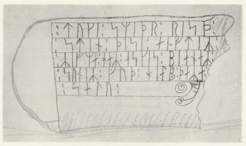
Bildquelle: Zeichnung von Jon SkonvigAus der Dissertation von Erik Moltke (*04.04.1901 - 19.10.1984, Runologe, Historiker) mit dem Titel "Jon Skonvig og de andre runetegnere. Et bidrag til runologiens historie i Danmark og Norge I-II, 1956-58" - Band 1 - S. 76/77
In / bei der Kirche von Ålum finden sich heutzutage ingesamt 4 Runensteine. Die Nummer 1 und 2 wurden im Jahr 1843 durch Rasmus Henrik Kruse (*07.08.1796 - 30.05.1877, Landschaftsmaler) bei der Kirche entdeckt. Der immerhin 205 cm hohe Stein Nummer 3 wurde hingegen erst 1890 auf einer Reise von Dr. (Karl Nicolay) Henry Petersen (*20.03.1849 - 21.09.1896, dänischer Archäologe, ab 1879 im Nationalmuseum angestellt, ab 1892 als Leiter der Mittelalterabteilung) am Fuße des Kirchhügels von Ålum entdeckt. Er trägt auf seiner Rückseite eine tolle Reiterritzung.
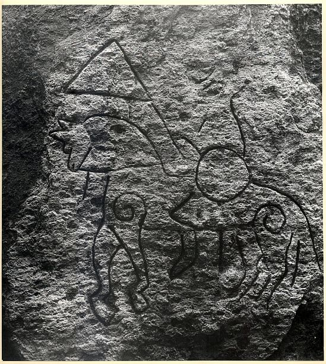
Bildquelle: Fotografie von Erik Moltke (*04.04.1901 - 19.10.1984, Runologe, Historiker) - Quelle: Digitale Sammlung des Nationalmuseums Kopenhagen - Lizenz: CC-BY-SABei der Umsetzung der den Kirchhof umgebenden Mauer wurde der 4. Runenstein im Oktober 1902 gefunden.
18.11.2024
Heute konnte ich innerhalb von Jütland bis F - Randers kommen. Zu den insgesamt fünf ausgestellten Runensteinen fand ich bei Internet Recherchen doch noch etliche Informationen zu den Personen, die in deren Entdeckungsgeschichte eingebunden sind.
17.11.2024
Die letzten Tage habe ich weiter an den Runensteinen von Jütland abschließend gearbeitet und bin inzwischen bei 47 - Spentrup angekommen. Dann kam mir irgendwie der Runenstein von Seeland - 93 - Gørlev 1 dazwischen. Einmal darüber gesessen, habe ich ihn umfassend aufbereitet. Er zählt nämlich zu einem der ältesten und wichtigsten Runendenkmälern im wikingerzeitlichen Dänemark.
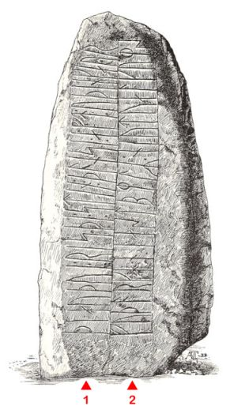 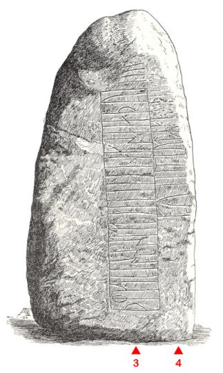
Auf der Seite A findet sich in der 2. Linie (von unten nach oben) ein komplettes Futhark (Runen Alphabet).
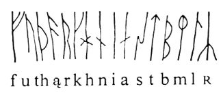
Quelle: Moltke - Runes and there Origins - 1985 - S. 28Die magische Buchstabenfolge auf der 3. Linie - "þmkiiissstttiiilll" - ergibt drei Wörter auf -istil mit jeweils verschiedenem Anlaut: pistil, mistil, kistil Distel, Mistelzweig, Kistchen. Der Zweck dieser Formelwörter, die genauso auf dem Ledberg-Stein (Östergötland/Schweden) und in ähnlicher Anordnung noch in anderen Inschriften vorkommen, ist unbekannt. Ausgehend von den Fluchstrophen der zauberkundigen Busla (Edda), die nach der letzten und 9. Strophe:
"Sechs
kommen hier:
Sag ihre Namen,
entziffre alle!
Ich zeige sie dir.
Rätst du sie nicht,
wie ichs richtig heiße,
so fahr hin zur Hel,
von Hunden zerfleischt,
deine Seele aber
sinke zur Hölle!"
eine sechsfache in Runen geschriebene Folge von istil-Wörtern bietet:
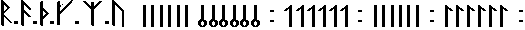
hat die Erklärung als Fluchwörter (hier: gegen Grabschänder ?) noch am meisten für sich.
09./10.11.2024
Gestern und heute habe ich mich im Zusammenhang mit den Runenstein - 38 Kongens Tisted - mit der Person Pastor Jørgen Frederik Jörgensen (*18.10.1807 - 07.03.1876, Pfarrer im Thisted-Binderup-Durup Pastorat von 1843-1850, Folketing Mitglied von 1849 bis 29.10.1851),
 Bildquelle:
Rigsdagens
Medlemmer gennem Hundrede Aar 1848-1948 : Bind I (S. 279 - S. 286
in der pdf-Datei) - Lizenz:
CC-BY-SA
Bildquelle:
Rigsdagens
Medlemmer gennem Hundrede Aar 1848-1948 : Bind I (S. 279 - S. 286
in der pdf-Datei) - Lizenz:
CC-BY-SA
beschäftigt und bekam vom Ravnkilde Archiv, durch Helge Gårn, einige Unterstützung. Danach war es relativ einfach weitere Infos zu dessen Person plus dieses Bildnis im Internet aufzutreiben. Tusind tak Helge!
08.11.2024
Heute bekam ich eine E-Mail von der Königlichen Bibliothek in Kopenhagen mit einem Anhang. Darin befand sich diese Fotografie.

Es handelt sich um den ersten schriftlichen Beleg zum Runenstein von Jütland - 38 Kongens Tisted, nämlich den Brief mit einer Zeichnung von Pastor F. J. Jörgensen, datiert auf den 03.01.1848 (angekommen offenbar erst 23.06.1848 und nicht 29.06. wie in Jacobsen/Moltke - Danmarks Runeindskrifter angeführt) an Carl Christian Rafn (*16.01.1795 - 20.10.1864, Altertumsforscher), der sich in der Sammlung "Efterladte papirer (Nachlass)" in der Königlichen Bibliothek in Kopenhagen (Den sorte Diamant) erhalten hat (NKS 1599 folio). Auf meine Anfrage hin hat sich eine freundlichen Mitarbeiterin das Material aus dem Lager kommen lassen und für mich dieses Foto angefertigt. In der Hinterlassenschaft von Rafn haben sich noch zu vier weiteren Runensteinen - Sønder Vissing 2 (DR 56) / Skjern 2 (DR 81) / Kongens Tisted (DR 135) / Rønninge (DR 202) - für mich interessante Unterlagen erhalten. Da würde ich aber an einem kostenpflichtigen Digitalisierungsauftrag nicht herumkommen. Eine Anfrage zu den tatsächlich anfallenden Kosten habe ich mal auf den Weg gebracht.
Brief Übersetzung: Diese Zeichnung stammt von einem Runenstein, der nun in meinem Garten steht, wohin ich ihn mit großer Mühe gebracht habe. Es wurde auf einem kleinen Grabhügel in Lille Rørbek, Gemeinde Ravnkilde, Brorstrup Pastorat, Års Herred, gefunden. Der Grabhügel lag 60 bis 100 Schritte vom Brastrup See entfernt, in der Nähe eines kleinen Baches. Der hervorragend erhaltene Stein ist etwa 2,25 Ellen hoch, 17,5 Ellen breit und etwa 1 Elle dick. Ich habe ihn von einem Mann für 1 Rigsdaler gekauft, der ihn in einer Mauer um seinen Garten abgelegt hatte. In dem Hügel, der immer noch nur zur Hälfte ausgegraben ist, wurde außer zerfallenen menschlichen Knochen nichts gefunden. Es interessiert mich sehr zu wissen, ob dieser Stein mit Inschrift schon in der Vergangenheit bekannt war."
Thisted Pfarrhof, d. 3. Januar 1848
Jørgensen - Pfarrer in Thisted, Binderup und Durup in der Diözese Viborg
In dem Zuzsammenhang bin ich im Internet auf diese interessante dänischsprachige Online Lernanwendung zur "Gotisk håndskrift" gestoßen. Bis 1875 war diese Schrift in Dänemark gebräuchlich, bevor sie von der heute gängigen abgelöst wurde. Darüber soll man in die Lage versetzt werden die in Frakturschrift gehaltenen alten Dokumente in Archiven/Kirchenbüchern usw. lesen zu können. Eine tolle Geschichte. Nach vielen nützlichen Tipps kann man die Sache auf der Plattform auch testen. Dabei habe ich gar nicht mal so schlecht abgeschnitten! :-)
06.11.2024
Heute kam ich innerhalb von Jütland bis E - Hobro - das kleine Museum in der Stadt, das ja inzwischen geschlossen wurde. Im Rahmen meiner Recherchen zu Fyrkat stieß ich zuvor auf diese, mir bislang unbekannte, Info:
Eine neue Ausstellung über die Geschichte der Wikingerburg Fyrkat bei Hobro wurde in Anwesenheit von Königin Margrethe II. am Montag, 02.09.2024, offiziell eröffnet. "Mit der neuen Ausstellung werden die Funde und die Verbreitung sehr nah an den Ort gerückt, an dem sie gefunden wurden, und bieten dem Publikum so ein integrierteres und viel besseres Museumserlebnis, sagt Ulla Varnke Sand Egeskov, Museumsinspektorin der Nordjyske-Museen. Die neue Ausstellung auf dem Møllegård Fyrkat wird den Besuchern einerseits eine Einführung in die Geschichte von Fyrkat und den anderen dänischen Wikingerburgen aus der Zeit von König Harald Blauzahn bieten, und andererseits die einzigartige Geschichte der Völva von Fyrkat entfalten. Sie war eine Seherin/Zauberin, die in einem der Gräber gefunden wurde, die bei der Wikingerburg ausgegraben wurden.
04.11.2024
Heute bekam ich gleich zweimal E-Mails von einem Mitarbeiter des Antikvarisk-Topografisk Arkiv in Kopenhagen - Tusind tak Dánial - und in der Anlage Material das ich vor wenigen Tagen angefragt hatte. Welch Freude! Zum Runenstein von Flejsborg erhielt ich die Zeichnung von Rasmus Henrik Kruse (*07.08.1796 - 30.05.1877, Landschaftsmaler) aus dem Jahr 1855. Zum Runenstein von Suldrup bekam ich die zweiseitige schriftliche Mitteilung von Lehrer I. Nissen aus dem Jahr 1895 mit dessen Zeichnung der beiden Runensteine. Natürlich habe ich die Dokumente unverzüglich aufbereitet und auf den betreffeden Webseiten eingestellt.
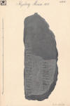 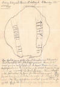 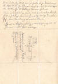
Lizenz jeweils: Public Domain
04.11.2024
Laut Pressemeldungen vom 31.10.2024 wurde in Schweden in der Region Halland in Südwestschweden bei Varberg per Zufall ein sehr großes wikingerzeitliches Gräberfeld entdeckt. Wir haben aber erst rund sechs Prozent des gesamten Gräberfeldes ausgegraben. berichtet Archäologin Petra Nordin. Das Team vermutet, dass ein Großteil des Wikinger-Friedhofs heute von modernen Bauten einer nahen Siedlung überdeckt ist. Nach Schätzungen der Archäologen des Naturhistorischen Museums umfasst der bereits ausgegrabene kleine Teil des Wikinger-Friedhofs aber schon mindestens 139 Gräber, außerdem drei größere Grabanlagen mit in Schiffsform angeordneten Steinen sowie einen Grabhügel in Schiffsform. Einen dieser Funde interpretieren wir als 50 Meter lange Steinanlage in Schiffsform, die direkt auf dem Hügelgrat lag. Hier der Link zum offiziellen Bericht der Archäologen, der einige Fotos vom Fundmaterial und den Grabungsarbeiten beinhaltet.
01.11.2024
Inzwischen bin ich mit den nochmaligen Überarbeitungen innerhalb von Jütland bei 37 - Ravnkilde angekommen. Zu dem Runenstein von Flejsborg hat Rasmus Henrik Kruse (*07.08.1796 - 30.05.1877, Landschaftsmaler) in seinem Werk mit dem Titel "Beretning om tvende etc. ubekjendte Runesteene" von 1855 Anmerkungen zu Runenstein und der Lesung der Inschrift erfasst, wie ich bei meinen Recherchen erfuhr. Ferner hat er eine Zeichnung beigefügt. Diese Unterlagen werden offenbar in Kopenhagen in dem "Antikvarisk-Topografisk Arkiv" aufbewahrt. Dorthin habe ich heute - 01.11.2024 - mal eine Anfrage gerichtet, ob man mir bitte dieses Material einscannen und übermitteln kann. Ich bin gespannt, zumal ich von dort schon sehr viel Unterstützung / Material bekam.
30.10.2024
Im Zuge der Recherchen zu den Runensteinen von 21 - Vang und 28 - Gunderup habe ich mal wieder die tolle Online Datenbank Sognekort genutzt. Mit Unterstützung des damaligen Dänischen Schulmuseums startete Svend Trøst Hansen (*14.09.1880 - 04.07.1939 - link-LIVES - Konfirmation 21.04.1895) 1917 ein Projekt, das alle Pfarreien in Dänemark dokumentieren sollte, sowohl in Bezug auf Kirchen als auch auf Schulen und die jeweiligen Mitarbeiter, damals und früher, mit dem Namen: Dänemarks Kirchen und Schulen. Deshalb schrieb der Vorstand des Museums einen Brief an die Priester und Lehrer in allen Pfarreien und gab zu verstehen, dass er ... ein solches Werk als von großem historischen Wert und äußerst wünschenswert erachtet und er es den Herrn Priestern und Lehrern in jedem Fall dringend empfehlen muss." Die Gemeinden waren darüber bei der Beschaffung der notwendigen Bilder von Menschen und Gebäuden hilfreich. Insgesamt gab es zur fraglichen Zeit in Dänemark ca. 2000 Kirchengemeinden, von denen über die Rückmeldungen wohl nur 856 sogenannte "Sognekort" erstellt werden konnten. Es sind fotografische Collagen - 18,5 x 37,5 cm - mit insgesamt 36.748 Personen als Medaillonsfoto von 2 x 3 cm und Gebäude. Inzwischen sind alle digitalisiert und erfreulicherweise mit toller Suchfunktion in eben jener Datenbank abrufbar. Ein Manko ist, dass es kein Datum für die Aufnahme der Bilder gibt. Die Daten umfassen den Abschnitt etwa ab Mitte der 1880er Jahre bis 1937.
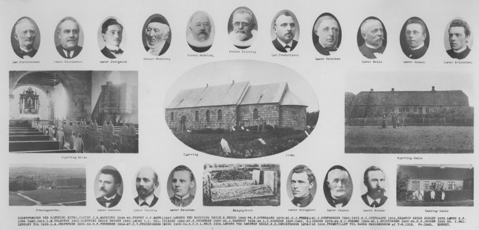
29.10.2024
Heute habe ich nochmals viel Zeit für die beiden Runensteine von Jütland - 28 - Gunderup aufgewendet. Jetzt sollte dann aber auch wirklich alles drin sein. Ich fand im Internet nochmals etliche Informationen zu den involvierten Personen (Personalien/Bildnisse). Insgesamt habe ich in die Ausarbeitung 126 Abbildungen / Fotos gepackt - 97 zum Runenstein 1 und 29 zum Runenstein 2.
28.10.2024
Hinsichtlich der Informationen zu den einzelnen Runensteinen greife ich in erster Linie auf das Standardwerk "Danmarks Runeindskrifter, Jacobsen, Lis/Moltke,Erik, København 19411942" zurück, das ich mir schon vor Jahren gekauft habe. Der Registerband ist online verfügbar, der Text- und der Tafelband aber sicherlich aus Urheberrechtsgründen bislang leider nicht. Bis zu dessen Erscheinungsjahr sind darin normalerweise alle Details umfassend erfasst. Auch wenn ich mich oft frage, wie den Autoren das ohne Internet usw. damals überhaupt möglich war. Als ich gestern den Runenstein von Jütland - 25 Hune nochmals überarbeitet habe, war ich deshalb wirklich überrascht, dass darin die Information aus "Indberetninger fra Præsterne i Aalborg Stift 1638" - innerhalb von "Samlinger til Jydsk Historie og Topografi udgivne af det Jydske historisk-topografiske Selskab, 4. række. I. bind redigeret af S. Nygård, 1911-14" - aufbereitet von Arkivassis tent, cand. mag. Hans Knudsen (*01.07.1882 - 05.05.1946, Archivar) - S. 103 / S. 33 in der pdf-Datei) fehlte. Der damalige Pfarrer in Hune, Jacob Søffrensønn, hat folgenden Bericht an Ole Worm (*13.05.1588 - 31.08.1654, Arzt, Universalgelehrter und der Begründer der Runologie) abgegeben: "...Sønden i Hun kirckegaards diggit er en steen med nogle runebogstaffuer paa, som er tillforn angiffiien och lest. Jacob Søffrensønn. Egen haandt." Übersetzung: "Südlich des Kirchhofdeichs von Hune befindet sich ein Stein mit einigen Runenbuchstaben darauf, die angedeutet und gelesen werden können. Eigenhändig Jacob Søffrensønn." Ole Worm hatte nämlich den dänischen König Christian IV. (*12.04.1577 - 28.02.1648) dazu bewogen am 11. August 1622 einen Brief an die Bischöfe von Dänemark und Norwegen zu senden, um darüber die Pfarrer im Land aufzufordern alle Informationen zu Denkmälern, Runensteinen, Grabhügel usw. an ihn zu melden, um die älteste Geschichte Dänemarks zu beleuchten. Unterstützer oder gar treibende Kraft war wohl Christian Friis (*4. November 1581 auf Gut Krastrup in Farstrup - 01. Oktober 1639, dänischer Adliger und königlicher Kanzler). Der Originaltext dieses Briefes lautet auszugsweise: "Wor gunst tillforn. Wy bede Eder och wille, at I Eders mueligste flid ahnwender allewegne wdj Eders stigt att opsøge och antegne alle slags antiquiteter och documenter effter medfølgende fortegnelsis indhold, och att I saadanne med flid lader optegne och engang inden Paaske førstkommendis wdj wortt cantzelie lader indleffuere. Dermed skie wor willghe. Befalendis Eder Gud. Skreffuitt paa wortt [slott] Kiøbenhaffn, den 10. augusti anno 1622. Vnder vort signett.Christian."
Der Eintrag von Jacob Søffrensønn findet sich auch in den "Præsteindberetninger til Ole Worm i Ålborg og Ribe Stifter 1625-42" auf der S. 32 (S. 69 in der pdf-Datei) im Kapitel "Ålborg stift 1638".
27.10.2024
Der Besuch des dänischen Königspaars am 22.10.2024 in Schleswig-Holstein - dabei 1. Spatenstich für das neue Danewerk Museum - wurde in einem Filmbeitrag (9:18 Minuten) vom NDR mit dem Titel "Royals aus Dänemark in SH: Wo Frederik und Mary zu sehen waren" aufgearbeitet.
Eine tolle Bilderstrecke gibt es dazu auch vom NDR mit dem Titel "Das dänische Königspaar, Frederik X. und Mary, besucht SH".
26.10.2024
Die vermutlich letzte Überarbeitung der Örtlichkeiten zu Jütland kommt langsam voran. Ich bin heute bei 21 - Vang angekommen. Dabei erwies sich das Internet mal wieder als wahre Fundgrube. Im Zuge meiner Recherchen zur Person des Pfarrer von Vang, Pastor Madelung, der den Runenstein 1841 nach seiner Wiederentdeckung unverzüglich ankaufte und ihn in das Waffenhaus seiner Kirche nach Vang bringen und dort aufstellen ließ, wurde ich wider Erwarten umfassend fündig.
Seinen vollständigen Namen und seine Geburts-/Sterbedaten - Johan Henrik Madelung (*02.12.1799 - 31.10.1882) fand ich im Bestand der Königlichen Bibliothek in Kopenhagen in dieser Abhandlung "Danmarks Præstehistorie i Aarene 1869-1884 : Personalhistoriske Undersøgelser - S. 440 / S. 461 in der pdf-Datei)". Die stammt von Sofus Elvius (*03.04.1849 - 22.08.1921, dänischer Personalhistoriker). Mit den Daten fand sich schnell auch noch ein Foto von dessen Grabstein, schließlich auch noch eine Fotografie seiner Person im digitalen Bestand der Königlichen Bibliothek in Kopenhagen. Ein weiteres Bildnis findet man über die Datenbank Skolehistorie (siehen oben).
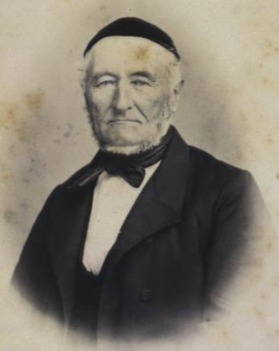
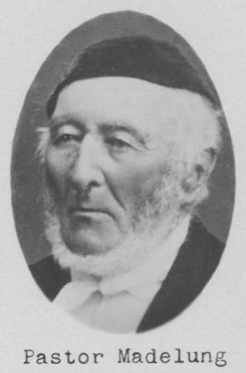
Bildquelle: Fotografie um 1870 von Fotograf Chr. Neuhaus (*13.03.1833 - 21.03.1907) - Det Kgl. Biblioteks billedsamling - Lizenz: Public Domain / Skolehistorie - Lizenz: Public Domain
21.10.2024
Die Tage habe ich mir zu Jütland - nochmals die Örtlichkeiten von 8 - Malt bis zu 15 - Hanning - im Hinblick auf Bildnisse/Fotografien zu den angeführten Personen - soweit lizenzfrei verfügbar - überarbeitet, wie ich es dann auch für alle anderen Orte so aufbereiten möchte. Für die Inseln Fünen, Lolland, Langeland habe ich es bereits erledigen können. Wenn ich dann bei einer Örtlichkeit die Webseite überarbeite, fallen mir aber auch immer wieder Verbesserungen dazu auf und ein, so dass es auch Nachträge zu finden gibt.
Zu dem Runenstein von Ådum z.B. schweife ich zu der Historie zu diesem tollen Gemälde ab. In Svendborg befindet sich in der Skt. Nikolaj Kirche das große Gemälde - 194 x 245 cm - Öl auf Leinwand - das Peder Jensen Lucoppidian (*20.04.1651 - 31.12.1717, Pfarrer und Altertumsforscher) mit seiner Frau Anna Christine Jørgensdatter Falster (*24.03.1654 -27.03.1714) mit ihren 12 Kindern zeigt. Es ist im November 1696 vom Odenseer Maler Thomas Jacobsen (Westenholtz) signiert und mit einer nachträglich angebrachten Inschrift versehen, die besagt, dass das Bild ein Geschenk des verstorbenen Pfarrers in Landet, Christian Morsing (1760), und seiner Witwe Johanne war, die am 2. Januar 1776 in Svendborg starb. Von Lucoppidian stammt nämlich diese 3-seitige handschriftliche Abhandlung zu dem Runenstein von Ådum von 1702 (?) - eigenes Foto vom 27. September 2022 in der Königlichen Bibliothek in Kopenhagen - weitere ausführliche Ausführungen auf der Webseite Ådum.
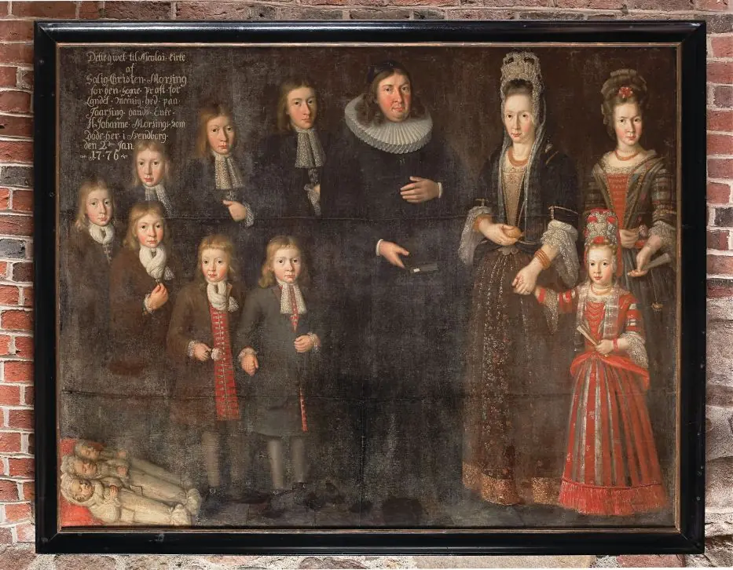
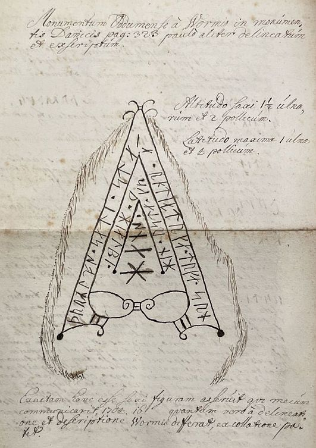
Bildquelle: Digitale Datenbank des Nationalmuseums Kopenhagen - Foto: Arnold Mikkelsen - Lizenz: CC-BY-SA
Hans Christian Andersen (*02.04.1805 - 04.08.1875)
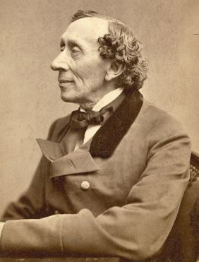
Bildquelle: Wikipedia - Lizenz: Public Domainder bekannteste Dichter und Schriftsteller Dänemarks hat während seines Sommeraufenthalts in Svendborg im August 1836 dieses Gemälde gesehen und war fasziniert vom Personenkreis. Einer der kleineren Jungen - der mit der Rose - in der Front stach für ihn als der unschönste heraus, und bezeichnenderweise nutzte er dieses Thema des Außenseiters in seinem 3-teiligen Roman Nur ein Geiger. 1837 als dritter Roman des Autors - autobiographisch eingefärbt - erschienen, erzählt Andersen die melancholische Geschichte eines künstlerischen Scheiterns - es geht um den talentierten Geiger Christian.
15.10.2024
Auf Nachfrage wurden mir heute von Anna-Elisabeth Jensen - Museum Lolland-Falster acht Fotos vom Umzug des Runensteins von Sædinge zugemailt und gleichzeitig die Erlaubnis zur Veröffentlichung auf meiner Webseite (Maribo) erteilt. Das Urheberrecht liegt beim Museum Lolland-Falster. Die Fotos wurden am 16.10.2014 aufgenommen - also vor fast genau 10 Jahren! Die beiden Runensteine wurden damals von draußen nach innen umgesetzt, damit sie nicht weiter Wind und Wetter ausgesetzt sind. Beispielhaft zeige ich an der Stelle nur mal zwei Fotografien.


Bei der Gelegenheit möchte ich sehr gerne auf das neben dänisch auch in deutscher Sprache - Aus dem Dänischen von André Wilkening - 2023 erschienene Buch von Frau Anna-Elisabeth Jensen, stellvertretende Leiterin des Museum Lolland-Falster, mit dem Titel "Freunde und Feinde. Dania Slavica. Südseeland, Lolland-Falster und Møn in der Wikingerzeit und im Hochmittelalter", hinweisen. Sie wurde für ihre Arbeit mit dem renommierten "Julius-Bomholt-Preis 2023", dem prestigeträchtigen Forschungspreis des dänischen Kulturministeriums, ausgezeichnet. Sie erzählt in ihrem Werk die Geschichte der Beziehung zwischen Dänen und Slawen rund um die Ostsee vor 1000 Jahren. Slawische Ortsnamen und slawisch inspirierte baltische Keramik zeigen, dass Lolland und Falster enge Verbindungen zum slawischen Raum südlich der Ostsee hatten und slawische Fürsten Besitz auf den Inseln hatten. Zum Preis von 56 (plus Versand) kauft sich das Buch mit 352 Seiten - 22,5 x 28,5 cm - und mit zahlreichen Farbabbildungen versehen - hierzulande am einfachsten bei AntikMakler.
Auf eine weiteres Buch - 2022 erschienen - mit dem Titel "Das Danewerk im 19. und 20. Jahrhundert" möchte ich noch hinweisen. Im Hinblick auf das Danewerk werden vom Autor Lars Erik Bethge (Leiter des Danevirke Museum) auf 164 Seiten der Nationalismus, der Nationalsozialismus, die deutsch-dänische Verständigung und der Mythos von Søren Telling geschildert. Der Preis liegt bei 19,50 (plus 3 Versandgebühren). Darin finden sich zahlreiche Fotos, die ich an anderer Stelle noch nie gesehen habe.
Der bevorstehende Besuch des dänischen Königspaares am 22. Oktober 2024 am Danewerk ist gleichzeitig der Beginn der Bauarbeiten für das neue Danewerk-Museum. König Frederik X. und Königin Mary werden nicht nur einen Einblick in das Bauprojekt erhalten, sondern der König höchstpersönlich wird den ersten Spatenstich auf der Baustelle vornehmen.
08. bis 11.10.2024
Ich wollte ja auch längst auf diese Neuerscheinung auf dem Buchsektor hinweisen: Prof. Dr. Alexandra Pesch - Vom Zauber der Zeichen - 15,00 Euro - Die historischen Hintergründe von graphischen Zeichen, Symbolen und Ornamenten in der modernen Wikinger- und Mittelalterszene.
Da es weiterhin bei uns regnet habe ich Zeit für Aktualisierungen - ab heute zu "Haithabu" und "Danewerk". In dem Zusammenhang fand ich über Archive.org die Ausgabe The illustrated London News - No. 1242 - Samstag 23.01.1864 - frei von Urheberrrechten - die auf dem Titelblatt einen Wallabschnitt des Danewerk und auf den S. 85-87 in englischer Sprache einen Bericht mit dem Titel "The Schleswig-Holstein Difficulty" über den Oberbefehlshaber des dänischen Feldheeres, Generalleutnant Christian Julius de Meza (*14. Januar 1792 in Helsingør; 18. September 1865 in Kopenhagen)
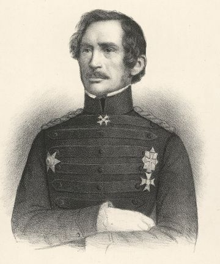
Bildquelle: Wikipedia - Lizenz: Public Domaindas Danewerk und den Halbkreiswall von Haithabu bringt. Kurz darauf kam es zum Deutsch-Dänischer Krieg vom 1. Februar 1864 bis zum 30. Oktober 1864.
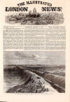 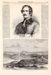 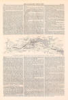 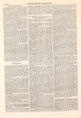 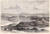
Zum Danewerk fand ich im Internet zahlreiche Webseiten, Informationen, Pläne zum neuen Museum, der neue "Archäologische Park" und die Architekturpläne dazu mit dem Titel "Freiraumkonzept Danewerk" von C.F. Møller Architects (Deren Konzept in Kurzform: Durch die Schaffung neuer Rundwege, die die vielen Highlights der Stätte miteinander verbinden, werden den Besuchern völlig neue Erlebnisse geboten, während die Barrierefreiheit verbessert und die archäologische Substanz und Natur vor Besucherverkehr geschützt wird. Dies geschieht zum Teil durch erhöhte, schwebende Stege, Treppen und Plattformen aus Cortenstahl auf oder über den empfindlichsten Teilen des Denkmals und der natürlichen Umgebung). Daneben wird es auch endlich Zeit einige meiner Fotos aus dem Spätjahr 2022 einzuarbeiten. Auch das wird für mich wieder sehr zeitintensiv.
Der nachfolgende Linkhinweis innerhalb der Webseite "KuLaDig - Kultur. Landschaft. Digital" bringt einen ausführlichen Überblick zu der Siedlung Haithabu und den einzelnen Wallabschnitten des Danewerks mit Text-, Bild- und Kartenmaterial.
Christian Weltecke, Birte Anspach, Matthias Maluck: Archäologischer Grenzkomplex Haithabu und Danewerk (UNESCO Welterbestätte). In: KuLaDig, Kultur.Landschaft.Digital. URL: https://www.kuladig.de/Objektansicht/KLD-271183 (Abgerufen: 10. Oktober 2024)
07.10.2024
Ich habe jetzt alle Folgen der 10-teiligen Dokumentation - Produktionsjahr 2024 - mit dem Titel "Die Mythen der Wikinger" über die Mediathek des TV Senders ARTE angeschaut. Ich fand diese einprägsame Variante der Vermittlung der nordischen Mythologie sehr lehrreich und habe darüber viel mehr verstanden/behalten, als durch das Lesen von zahlreichen Texten in den Jahren zuvor. Nehmt euch die Zeit, ich kann es euch nur empfehlen. Gesprochen wird die Geschichte großartig von Thomas Balou Martin.
Dazu passt ja eigentlich ganz gut, dass die NASA laut einer Pressemitteilung vom 23.09.2024 mit ihrem Rover Perseverance auf dem Mars einen seltsamen Stein mit Zebrastreifen - Durchmesser ca. 20 cm - entdeckt hat, dem sie den Namen "Freyas Castle" nach der nordischen Göttin Freya gab. Den Namen trägt auch schon seit 1906 ein 2221 m langer Gipfel im Grand Canyon. Dort liegt in unmittelbarer Nähe, ca. 2,7 km westlich, auch noch Wotans Throne.
Wotans Throne (Anhöhe mittig rechts) - Bildquelle: - Lizenz: Public Domain
Außerdem habe ich mir heute nochmals Jütland - 78 - Jelling vorgenommen. Da gibt es aufgrund der Fülle an Informationen immer wieder was zu ergänzen / zu verbessern. Zunächst habe ich die immer noch ausstehende Unterseite zum Runenstein anlässlich der Tour de France 2022 erstellt. Danach werde ich in den anderen Unterseiten noch fehlende Beiträge einarbeiten.
Im Internet fand ich heute dieses Gemälde von Jens_Raben (*14.03.1880 - 18.02.1960, Archäologe und Museumsdirektor)
 Bildquelle: 1920 gemalt von Sophus Hansen (1871-1946)
- im Besitz des
Museum Sønderjylland in Sønderborg -
Lizenz:
Public Domain
Bildquelle: 1920 gemalt von Sophus Hansen (1871-1946)
- im Besitz des
Museum Sønderjylland in Sønderborg -
Lizenz:
Public Domain
und habe es auf den relevanten Unterseiten zu 3 - Brovold / 4 - Stolbro Næs und 5 - Dyndved eingestellt. Meines Erachtens ist das Urheberrecht durch den Tod des Malers im Jahr 1946 bereits erloschen. Ich habe trotzdem noch beim Museum Sønderjylland um Erlaubnis angefragt, aber leider keine Antwort erhalten (Stand 19.10.2024).
Da es schon den ganzen Tag bei uns regnet habe ich mir auch einmal die Rubrik "DK Infos" vorgenommen und zahlreiche Verlinkungen als Erklärungen zu den verwendeten Begriffen eingestellt.
06.10.2024
Über YouTube fand ich heute weitere sehr interessante Filmbeiträge zur Geschichte der Wikinger, die ich bislang nicht kannte / nicht gesehen hatte. Von WELT DOKU findet sich eine zweiteilige Dokumentation mit dem Titel "Das Reich der Wikinger", die laut Abspann 2022 produziert und offenbar am 24.09.2023 erstmals ausgestrahlt / abrufbar war.
Teil 1 - 50.13 Minuten - Die furchtlosen Meister der Nordsee-Raubzüge
Im 8. Jahrhundert bricht das Zeitalter der Wikinger an. Die Skandinavier entwickeln damals besonders wendige Langschiffe mit Seitenruder - ideal für die Raubzüge der Wikinger. Jahrzehntelang überqueren sie von Norwegen aus die Nordsee, um zu wohlhabenden Klöstern Britanniens und Irlands zu gelangen. Ihre stolzen und unbarmherzige Anführer sind Olaf der Weiße und Ivar. Die Dokumentation erklärt den Ursprung der Wikinger und beschreibt die Lebensweise der berüchtigten Nordmänner.
Teil 2 - 50.15 Minuten - Gnadenlose Eroberer, meisterhafte Händler und Entdecker
Vor mehr als tausend Jahren überfallen die Wikinger Britannien, Irland und weitere Länder. Sie prägen die eroberten Gebiete maßgeblich - so zum Beispiel im 10. Jahrhundert in Dublin. Die Invasoren beeinflussen die irische Kultur und Architektur. Durch ihre großen Häfen und Flotten ermöglichen sie den Sklavenhandel. Sitric Seidenbart ist der letzte große Wikingerkönig Dublins. Sein Tod im Jahr 1042 markiert das Ende einer rund 200-jährigen Geschichte, geprägt durch Ivar und seine Nachfahren.
Die beiden Beiträge habe ich mir heute direkt angesehen. Sie behandeln die interessante Geschichte um die Wikinger Ivar Ragnarsson und Olaf der Weisse, die Dublin im Jahr 841 als Stadt begründeten, York eroberten und deren Nachfahren.
Eine weitere Dokumentation mit dem Titel Wikinger wird über YouTube in 5 Teilen von DOKULYMP zur Verfügung gestellt (Dokulymp ist der Doku-Kanal auf YouTube zum Thema Natur, Wissenschaft, Technik, Sport und Zeitgeschichte. Hier findest Du ein laufend aktualisiertes Programm an Dokumentationen, Reportagen und Berichten aus aller Welt).
Teil 1 - 45.22 Minuten - Der Beginn einer Reise
Teil 2 - 44.23 Minuten - Die Waffen der Wikinger
Teil 3 - 44.50 Minuten - Räuber und Entdecker
Teil 4 - 44.57 Minuten - Die großen Königreiche
Teil 5 - 45.36 Minuten - Der Weg nach Osten
Da habe ich bislang nur in den ein oder anderen Beitrag mal kurz reingeschaut. Aber auch hier ein deutig Daumen nach oben / lohnt sich auf jeden Fall.
04.10.2024
Nachdem ich einige Tage nicht dazu kam an der Webseite zu arbeiten, habe ich heute Abend zu Jütland - 78 - Jelling auf der Unterseite "Jelling - Geschichte" noch ergänzend Bildnisse/Fotografien zu den angeführten Personen - soweit lizenzfrei verfügbar - eingearbeitet.
Außerdem fand ich heute erstmals einen Hinweis auf eine neue 10-teilige Dokumentation - Produktionsjahr 2024 - mit dem Titel "Die Mythen der Wikinger" in der Mediathek des TV Senders ARTE.
Der Göttervater Odin, der listige Loki und die Liebesgöttin Freya bevölkern mit Elfen und Riesen Geschichten, die uns noch heute faszinieren. Von Odins Visionen unter dem Weltenbaum Yggdrasil bis hin zur Götterdämmerung Ragnarök - ein Abenteuer in 10 Episoden, unterlegt mit originellen Animationen und ausgewählten kunsthistorischen Darstellungen. Verfügbar bis 04.11.2025.
Die einzelnen Episoden lauten:
1. Odins Visionen (27 Minuten)
2. Geschenke für die Götter (26 Minuten)
3. Thors Bluthochzeit (26 Minuten)
4. Lokis Kinder (26 Minuten)
5. Kvarsir und der Dichtertrank (27 Minuten)
6. Der Fluch des Rings (26 Minuten)
7. Sigurd und die Walküre (26 Minuten)
8. Die Prophezeiung der Völva (27 Minuten)
9. Lokis Zankreden (26 Minuten)
10. Götterdämmerung (27 Minuten)
Teil 1 habe ich mir direkt mal angeschaut und fand es sehr ansprechend visualisiert und spannend gesprochen.
25.09.2024
Über den Newsletter
des
Odense Museum/Fünen wurde ich heute auf eine außergewöhnliche
Ausgrabung / Befund in
Åsum,
östlich von
Odense/Fünen
aufmerksam.
Die Archäologen des
Odense Museum haben in
Åsum
mehr als 50 außergewöhnlich gut erhaltene Skelette gefunden,
die zusammen mit Gegenständen begraben sind, die weit über die Landesgrenzen
hinausgehen und bestätigen, dass die Wikinger weit gereist
sind, um Handel zu treiben. In den letzten sechs Monaten haben sie die mehr als
50 Wikingergräber am südlichen Rand von
Åsum
in einem Bereich von ca. 2000 qm ausgegraben.
Die Archäologen schätzen, dass die Wikinger-Grabstätte im 8. und 9.
Jahrhundert genutzt wurde. Die gut erhaltenen Skelette
können den Forschern helfen zu verstehen, wie der Alltag der Vorfahren aussah,
die in der Gegend lebten, als
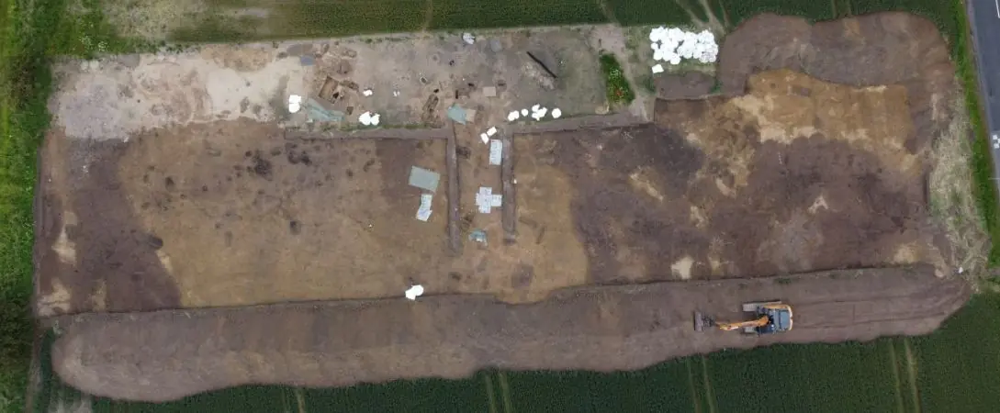
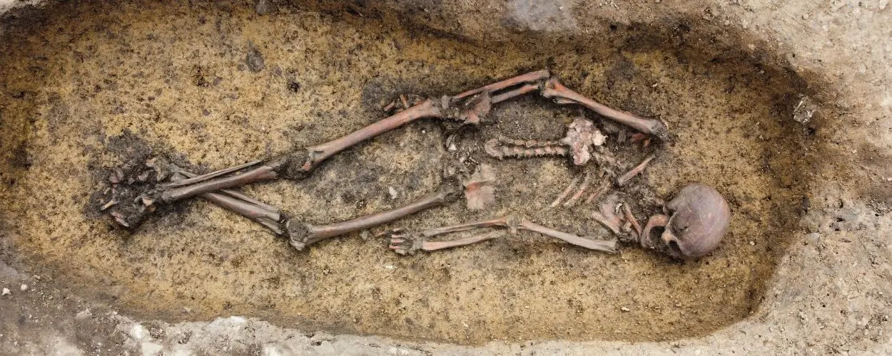
Bildquelle: Museum Odense
Nachtrag 04.10.2024 - Video zu diesem Gräberfeldfund (1:07 Minuten) über joyn.de
23.09.2024
Nachdem ich gestern über die ZDF Mediathek den Film "The Northman - Fremde Welten" geschaut habe - ganz schwach, meines Erachtens sein Geld nicht wert - fand ich in der ZDF Mediathek einige interessante Filme.
1. Walhalla - Die Legende von Thor - 100 Minuten - abrufbar nur noch bis 26.09.2024 - habe ich mir schon vor Monaten angeschaut
2. Die Königin des Nordens - 116 Minuten - abrufbar nur noch bis 25.09.2024 - Eine große Frau der Weltgeschichte, Margarethe I., Herrscherin über Dänemark, Norwegen und Schweden, muss sich zwischen ihren persönlichen Gefühlen und politischer Macht entscheiden.
3. Die Verteidiger von Mästerby - 44 Minuten - abrufbar nur noch bis 30.06.2026 - Über 600 Jahre lang wusste niemand, was 1361 in Gotland wirklich geschah. Nun haben Archäologen Beweise für den verzweifelten Kampf der Gotländer gefunden: Im Marschland, an einem Ort namens Mästerby.
4. Das letzte Gefecht von Visby - 44 Minuten - abrufbar nur noch bis 30.06.2026 - 1361 - die Schlacht von Visby. Über 600 Jahre später will ein Archäologenteam mehr darüber erfahren. Sie untersuchen Funde aus einem der größten Massengräber einer mittelalterlichen Schlacht.
5. Der Krieger von Janakkala - 44 Minuten - abrufbar nur noch bis 30.06.2026 - In Finnland wird das Skelett eines mittelalterlichen Kriegers entdeckt. Warum aber wurde er mit zwei Schwertern bestattet: einem aus jener Zeit und einem viel älteren Wikinger-Schwert?
Mit der kostenlosen Software "MediathekView" lassen sich diese Filme aber dankenswerterweise legal auf den Computer herunterladen, was ich umgehend gemacht habe. Dann kann man sie anschauen wann man will, immer und immer wieder. Danke den Machern dafür!
Irgenwie kam ich die Tage wieder auf Otto I. der Große (*23.11.912 - 07.05. 973 in Memleben) und habe mir im Hinblick auf seine 1. Ehefrau - Editha von Wessex (*910 - 26.01.946) - auf YouTube den Video des Landesmuseum für Vorgeschichte Halle mit dem Titel "Editha Begräbnis einer Königin" aus dem Jahr 2011 angeschaut (44.43 Minuten). In dem Zusammenhang wurde ich auf die 2. Ehefrau von Otto I. der Große aufmerksam. Es handelt sich um Adelheid von Burgund (*931 - 16.12.999). Sie war zuvor Gemahlin Lothars von Italien, von 947 bis 950 Königin von Italien und als Gemahlin Otto I. der Große von 951 bis 973 ostfränkische Königin und wieder Königin von Italien sowie von 962 bis 973 Kaiserin des ostfränkisch-deutschen Reiches. Adelheid wurde 1097 heiliggesprochen.
Sie wurde im Kloster Seltz im Elsass, das sie selbst 991 begründet hatte begraben. Dieser Ort liegt aber gerade einmal 20 km von meinem Wohnsitz und nur etwas mehr als 9 km von meiner Geburtsstadt Rastatt entfernt. Das war mir bislang nicht bekannt.
In Magdeburg findet sich eine Putzritzung an der Außenseite des östlichen Kreuzgangflügels, die Otto I. der Große zwischen seinen beiden Ehefrauen - Editha rechts und Adelheid links - zeigt.
 Putzritzung an der Außenseite des östlichen Kreuzgangflügels -
Lizenz:
Public Domain
Putzritzung an der Außenseite des östlichen Kreuzgangflügels -
Lizenz:
Public Domain
Der Magdeburger Fotograf Georg Eduard von Flottwell (*16.01.1844 - 30.10.1894) fertigte 1891 Aufnahmen der geschmückten Putzwand an, wobei er die Bilder zur besseren Sichtbarmachung stark retuschierte.
Bei meinem Besuch in Magdeburg vom 13. bis 15.10.2017 habe ich selbst ein Foto gemacht, aber das Bildnis ist wirklich nur mehr zu erahnen.
Also ab auf's Rad und am 18.09.2024 mal mit der Fähre "Saletio" über den Rhein nach Frankreich um bei der aktuellen Kirche die Bronzestatue von Adelheid in Augenschein zu nehmen.


Reste des Klosters befinden sich offenbar nördlich von Seltz am Seltzbach und sie wurden 1995 unter Denkmalschutz gestellt, wie die Infotafel wiedergibt. Die genaue Lage - 48°53'59.0"N 8°05'53.1"E - gilt es für mich aber noch zu erforschen, worüber ich dann nach meinem nächsten Rad Ausflug nachberichten - siehe 27.08.2025.
16.09.2024
Heute Abend habe ich mir Zeit genommen, um zu meinem Besuch in Stockholm im Historiska Museet in deren Ausstellung "Vikingarnas Värld - The Viking World" noch diverse Fotos einzustellen. Damit wäre meinerseits zu meinen zwei Schwedenaufenthalten im August 2024 alles abgearbeitet. Jetzt werde ich mich mal wieder offenen Themen in Dänemark zuwenden.
10.09.2024
Jetzt noch einen TV Tipp in der ZDF Mediathek - The Northman - Fremde Welten. Der Film kam im April 2022 ins Kino und kann beim ZDF bis zum 09.10.2024 abgerufen werden (offenbar aber nur zw. 22 Uhr und 06 Uhr).
10.09.2024
Es fehlen ja auch in der Rubrik "Weltweit" noch die Fotos zu meinem Besuch im in Stockholm im Historiska Museet in deren Ausstellung "Vikingarnas Värld - The Viking World". Dort hat es ja auch einige tolle gotländische Bildsteine gegeben, die ich heute Abend noch eingestellt habe. Weitere Bilder zu den dortigen Runensteinen und weiteren Exponaten der Wikingerausstellung folgen die Tage. Hier einmal exemplarisch der Bildstein Ardre VIII über dessen Bilderwelt es ein eigenes Buch aus dem Jahr 1976 in deutscher Sprache gibt - Ludwig Buisson - Der Bildstein Ardre VIII auf Gotland. Göttermythen, Heldensagen und Jenseitsglaube der Germanen im 8. Jahrhundert nach Christus.
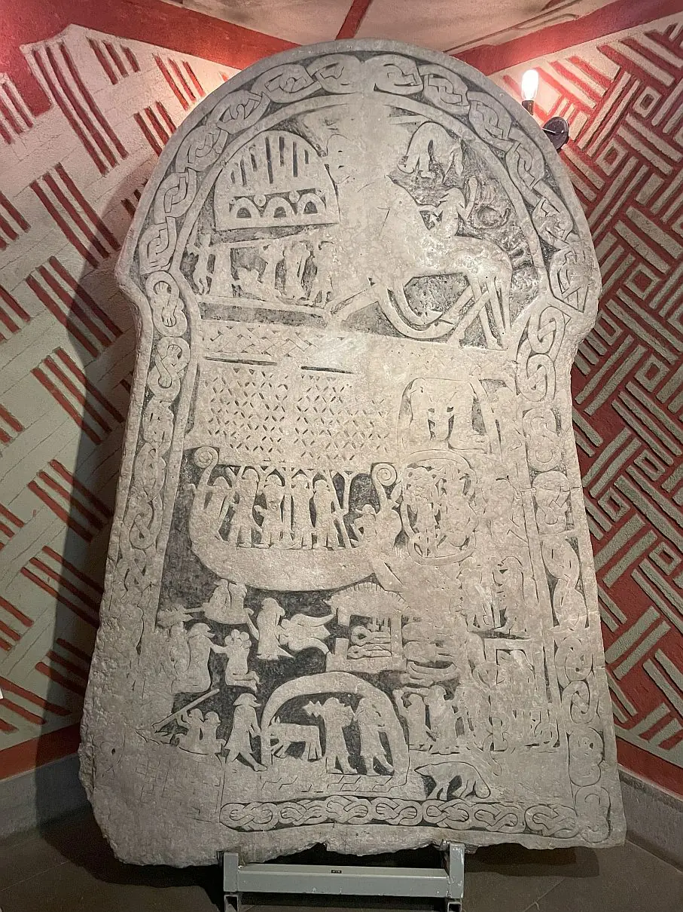
10.09.2024
Gestern habe ich stundenlang an der Einpflege meiner Fotos aus der Bildsteinhalle in Visby/Gotland in meine Rubrik "Weltweit" gearbeitet. Dabei habe ich alle in dem Museum ausgestellten Bildsteine in einer Reihenfolge eingefügt, was es bislang auch noch nirgends gibt. Die eigentliche Bildsteinhalle mit ihren 41 Bildsteinen ist abgeschlossen. Im 1. OG finden sich dann nochmals 3 kleine Bruchstücke und ein doppelseitiger Bild-/Runenstein mit großflächiger Ornamentik. Mein persönlicher Liebling ist der Bildstein von Stenkyrka Smiss I (GP0397) mit dem tollen Wikingerschiff im unteren Bildbereich. Das hat mich schon vor über 20 Jahren zu einem kleinen Kunstwerk - das Wikingerschiff aus schwarzem Fotokarton ca. 30 x 30 cm ausgeschnitten - inspiriert. In der anstehenden dunklen Jahreszeit will ich auch endlich mal die Idee zu einem handgefertigtem Mobile aus solchen Wikingerschiffen umsetzen. Das tolle Modell von Flensted mit 5 Wikingerschiffen hängt bei mir schon seit Jahren an der Decke - das Modell wurde bereits 1960 entwickelt - meinem Geburtsjahr.

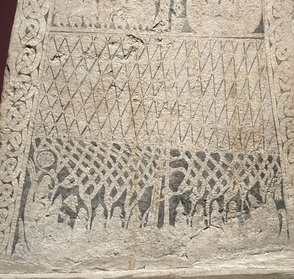
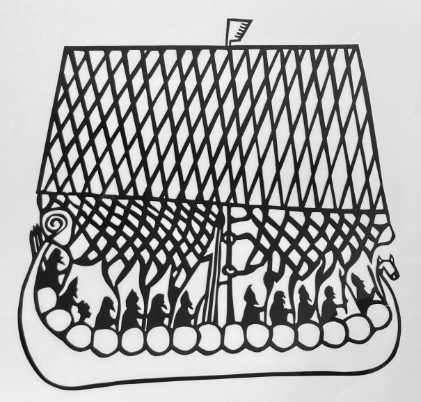
Ich denke, dass ich mit der Arbeit zu Visby/Gotland die Tage abschließen kann.
02.09.2024 / 09.09.2024
Am Donnerstag, 29.08.2024, weilte ich für einige Stunden in Visby auf der schwedischen Insel Gotland. Natürlich war die erste Anlaufadresse das Museum Gotlands Fornsal mit der Bildsteinhalle unmittelbar neben dem Eingangsbereich mit dem Shop und der Kasse (Eintritt für Erwachsene 180 SEK = 15,86 ). In dem tollen Museum finden sich daneben zahlreiche Schatzfunde der Wikingerzeit, aus denen der weltweit größte Silberschatz aus der Wikingerzeit, der sogenannte Spillingsschatz herausragt. Er beinhaltet ca. 67 kg Silber und Bronzestücke, darunter ca. 14300 Münzen und über 500 Armringe. Außerdem wird auch eine mittelalterliche Ausstellung zur Eroberung Gotlands durch den dänischen König Valdemar IV. Atterdag im Jahr 1361 gezeigt. Die bei meinem Besuch erlangten Informationen und vor allem meine zahlreichen Fotos werde ich zeitnah in der Rubrik "Weltweit" unter Visby/Gotland einstellen.
Hier vorab nur mal eine kleine Auswahl - die Bildsteinhalle in verschiedenen Ansichten und meine Person - zum Größenvergleich - ich 187 cm - neben dem Bildstein Hunninge I (Nr. 153, GF C9286, ca. 700-800 n. Chr., sichtbare Höhe ca. 295 cm) und dem Bildstein Smiss I i Stenkyrka (Nr. 295, GF 3428, ca. 700-800 n. Chr., bewahrte Höhe 253 cm).
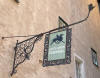 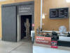 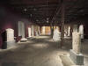 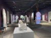

 Alles eigene Fotos vom 29.08.2024
Alles eigene Fotos vom 29.08.2024


In dem Zusammenhang möchte ich nochmals auf das Forschungsprojekt "Bildsteine auf Gotland" von PD Dr. Sigmund Oehrl hinweisen - beinhaltet 8 Videos zw. 5 und 7 Minuten Länge. Darüberhinaus ist dieses Video - quasi ein Interview mit PD Dr. Sigmund Oehrl - mit dem Titel Stenarnas berättelse von Agaton Film über Vimeo im Hinblick auf die gotländischen Bildsteine sehr interessant.
Im Rahmen meiner Recherchen stieß ich heute (08.09.2024) erstmals auf die Webseite "Gotlandic Picture Stones" über die man nun - zunächst noch in einer Beta-Version - Zugriff auf alle bislang bekannten gotländischen Bildsteine - 694 an der Zahl - in digitalisierter Form mit sämtlichen Informationen zu dem jeweiligen Fundort, den Maßangaben, der Literatur, den Katalognumern in den Werken von Sune Lindqvist und Jan Peder Lamm usw. findet. Dort heißte es in englischer Sprache - hier übersetzt: "Diese Gedenksteine mit eingemeißelten Bildern von der schwedischen Insel Gotland gehören zu den berühmtesten archäologischen Monumenten der skandinavischen Frühgeschichte. Ihre reichhaltige Bildsprache liefert einzigartige Informationen über das Leben und die Religionen der alten Skandinavier. Diese Ausgabe enthält alle verfügbaren Informationen zu jedem Monument, einschließlich hochauflösender 3D-Modelle, die interaktiv genutzt werden können. Gehen Sie auf Entdeckungsreise!".
Die verfügbaren, umfassenden Informationen in deren Datenbank hier einmal anhand des kleinen Bildsteins "GP 346 Sanda Sandegårda II" - Maße - D: 12 cm / B: 49 / H: 106 - dargestellt.
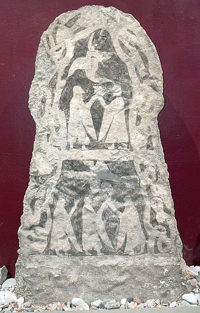
Eigenes Foto vom 29.08.2024Innerhalb der o.g. Webseite findet sich auf der Startseite auch der Link "Archival Material" mit diesem Eintrag (übersetzt): "Zu den besonders wertvollen Funden im Archiv zählen die Manuskripte zu Sune Lindqvists Grundlagenwerk Gotlands Bildsteine sowie die umfangreiche Materialsammlung, auf der diese Publikation basiert. Letzteres Material, das nach Jahrzehnten vergeblicher Suche 2020 von Magnus Kallström (*1964) bei ATA entdeckt wurde, wurde auf Initiative und Kosten des Projekts Ancient Images 2.0 vollständig digitalisiert und ist nun im ATA-Online-Archiv - jeweils auch als Download - Lizenz Public Domain - verfügbar:
Sune Lindqvist - Primärmaterial Gotlands Bildsteine
Einen Part - Gotland A- B (Arkivvolym) Arkivsignum: ATA/ENSK_260-1/F 1/1 - habe ich gerade heruntergeladen. Es handelt sich hier um eine 517-seitige pdf-Datei mit handschriftlichen Aufzeichnungen, Briefverkehr, Zeichnungen, Fotografien usw. Da wurde wirklich ein Schatz wiederentdeckt!
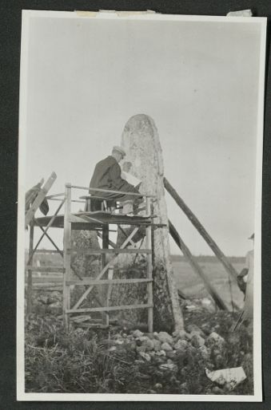
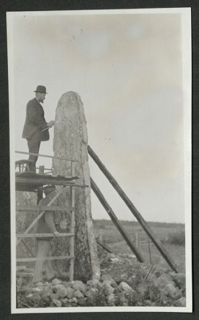
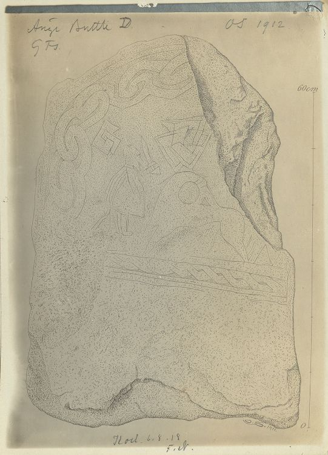
Fredrik Nordin, bzw. Gabriel Gustafson und Fredrik Nordin untersuchen Buttle Änge I - Aufnahme 1911 von GG / Zeichnung Buttle Änge V von Olof Sörling von 1912 /siehe Gotlands Bildsteine Band I von Sune Lindqvist, S. 11 oben, bzw. Band II, S. 38 unten.
Alle 11 Dateien haben zusammen ein Volumen von 3,44 GB und beinhalten insgesamt 5142 Seiten.
20.08.2024
Über den E-Mail Newsletter des MOMU - Moesgaard Museum erfuhr ich heute, dass im Frühjahr 2024 durch den 22-jährigen Archäologiestudenten Gustav Bruunsgaard mit seinem Metalldetektor in Elsted, ca. 12 km nördlich von Aarhus, ein wikingerzeitlicher Silberschatz gefunden wurde, der Verbindungen zu Russland, der Ukraine und den britischen Inseln aufweist. Zuerst fand er einen silbernen Armreif. Einige Tage später kehrte er an die Stelle zurück und fand sechs weitere Armreifen. Zusammen wiegen die 7 Armringe etwas mehr als 500 Gramm. Sie wurden auf das 8. Jahrhundert datiert, also in die frühe Wikingerzeit kurz nach der Gründung der Wikingerstadt Aros (Aarhus). Es wird angenommen, dass die Ringe in Südskandinavien, wahrscheinlich Dänemark, hergestellt wurden. Der eingewickelte Ring stammt ursprünglich aus Russland oder der Ukraine und wurde seitdem in den nordischen Ländern nachgeahmt. Die drei bandförmigen, geprägten Ringe sind vom südskandinavischen Typ und dienten als Inspiration für Armreifen in Irland, wo sie sehr verbreitet wurden. Die drei glatten Armreifen sind selten, aber aus Skandinavien und England bekannt.
Der Fund unterstreicht die Stellung von Aarhus als internationale Drehscheibe in der Wikingerzeit. Der Schatzfund wird aktuell im MOMU - Moesgaard Museum ausgestellt, bevor er als "Danefæ" an das Nationalmuseum in Kopenhagen übergeben werden muss.
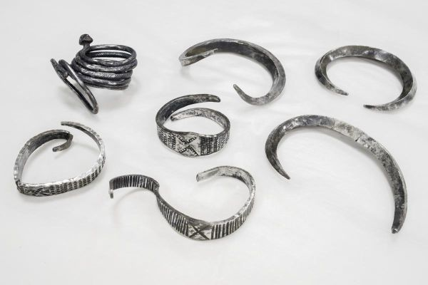
Foto: Moesgaard MuseumAuf den Webseiten des Museums finden sich zu dem Schatzfund ausführlichere Informationen (in dänischer Sprache) mit einem eingebetteten interessanten Video (2.48 Minuten).
Anfang August 2024 wurde der Presse auch mitgeteilt, dass das MOMU - Moesgaard Museum mit der Stadt Aarhus eine ehrgeizige Vision für die Errichtung eines neuen Wikinger Museums am Bispetorvet in Aarhus entwickelt. Dessen Eröffnung ist aktuell für 2032 angepeilt.
19.08.2024
Die letzten Tage habe ich die Fotos aus Stockholm und Birka aufbereitet. Heute konnte ich in der Rubrik "Weltweit" die Fotos zum Besuch auf Birka einstellen. An den anderen arbeite ich noch.